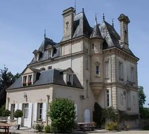
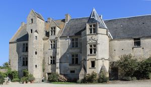
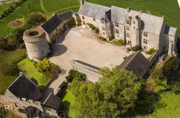
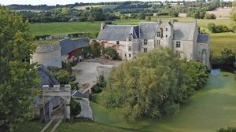

Recensement Jean-Claude Truffet
| Département | 14 — Calvados |
| Canton | Bayeux |
| Commune | Vaux sur Aures Mosles |
| Type d'édifice | Château |
| Période d'origine | XVI |




ARGOUGES, le château dArgouges a été reconstruit par la famille Guilbert en 1880 sur danciennes fondations. Avec sa Chapelle et son Presbytère, ils appartenaient à lancienne paroisse dArgouges-sous-Mosles. Depuis notre arrivée en 2002, le Château nétait jamais sorti de la famille dorigine. Le château de grand confort, entièrement restauré, avec cinq chambres d'hôtes de charme, propriété de Bertrand Levasseur depuis 1983. Manoir d'ARGOUGES lors de la guerre de Cent Ans, le manoir est pillé et en partie détruit. Une garnison anglaise y sera massacrée par du Guesclin. Le manoir est reconstruit à la fin du XVe siècle par Pierre d'Argouges. En 1632, Joachim d'Argouges, vend la seigneurie à Madelaine de Choisy, sur de Jean de Choisy, comte , seigneur de Balleroy et de Beaumont-le-Richard. Quasi-abandonné dès 1524, le déclin fait son uvre. Joachim dArgouges, dernier seigneur des lieux, vend le fief sous Louis XIII. Lacquéreur, Jean de Choisy, seigneur de Balleroy, fait préciser dans son état des lieux que « lédifice est déjà devenu définitivement impropre à lhabitation » et installe seulement un métayer dans une partie secondaire. Cette seule présence évite cependant les habituels pillages de ce type de demeure délaissée et ce ne sont pas moins de onze cheminées monumentales que lon peut encore aujourdhui contemplé En 1722, le manoir est acquis par Claude Olivier Regnault, président trésorier de France à Caen. Laure et Bertrand Levasseur, en 1983 en font l'acquisition.
ARGOUGES Le château d'Argouges reste un étonnant manoir élevé aux XVe et XVIe siècles. La porte crénelée donne accès à la cour où se dresse le logis qui a conservé deux très belles tourelles, des fenêtres à meneaux, et des lucarnes à gables de Pierre: c'est l'uvre d'une vieille famille normande, les d'Argouges. Propriété de dix hectares, le château de grand confort, entièrement restauré, avec cinq chambres d'hôtes de charme, la demeure comprend une salle de billard, un salon bibliothèque avec une belle cheminée et une salle à manger. Manoir d'ARGOURGES guère remanié depuis sa construction, c'est sa partie droite, enceinte de la cour et tour sud-est, qui seraient les plus anciennes, et remonteraient à la fin du XIVe siècle.La partie gauche comprend notamment le pavillon d'entrée, avec porte charretière à arc surbaissé et porte piétonne, surmonté de trois créneaux. Un modillon sculpté figurant la tête d'un homme est apposé au dessus et à gauche de la porte charretière. À côté du porche se trouve un four à pain. Le logis seigneurial, ceint de douves et d'un petit mur d'enceinte, se présente sous la forme de deux pavillons bâti en pierre de Caen. Le pavillon de droite, a en son centre une tour polygonale, et celui de gauche, une tour hexagonale avec une fenêtre centrale surmontée d'un fronton sculpté, plus basse que la précédente car inachevée. Le logis s'éclaire pas des fenêtres à meneaux. Autour se dressent des dépendances ainsi qu'une tour d'angle couronnée de mâchicoulis et percée d'embrasures de tir, et une grosse tour. Les communs, dont un à usage de pressoir, accessible grâce à un escalier en pierre, prennent place à l'extérieur des douves.
Famille Guilbert
"
Manoir d'argouges
gps 49° 19' 17? N, 0° 43' 13? Ouest